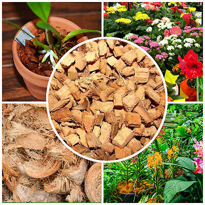
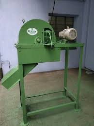
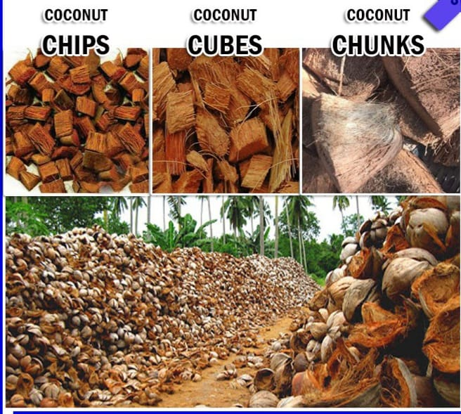

Coconut tree is one of the special and beneficial trees in Sri Lanka. The scientific name of the coconut tree is cocos nucifera. Every part of the coconut tree is used for many industries and many activities, but coconut husk industry is a major industry in some areas of Sri Lanka. People in dry zone can easily do this industry as a self employment. And also it is a very profitable industry. First we have to buy or collect coconut husks and cut them into pieces before drying. After that they are put in to the husk cutting machine one by one. We can cut them into several sizes like 7mm,9mm and 10mm. The large pieces than 10mm are taken to anthurium cultivation. And the 7mm,9mm and 10mm pieces are taken to make bricks. After cutting tham they are dried in the heavy sun. After washing them they are arrange into bricks for exporting. By way of that we can get foreign exchange from coconut husk industry. But normal people can't directly export them. So there are so many local traders who are buying those husk pieces. So normal people can sell them to those local buyers. If you willing to do this industry you can do it as a self business or as well as a large scale business. And also another thing you have to know about this industry is how to buy a quality husk cutting machine. The best husk cutting machines in Sri Lanka are sold by Diamond Industries. The wastage of this machine is like 5%-10%. So if yo like to know more about this industry you can contact us.
Tel: 0714763677
  